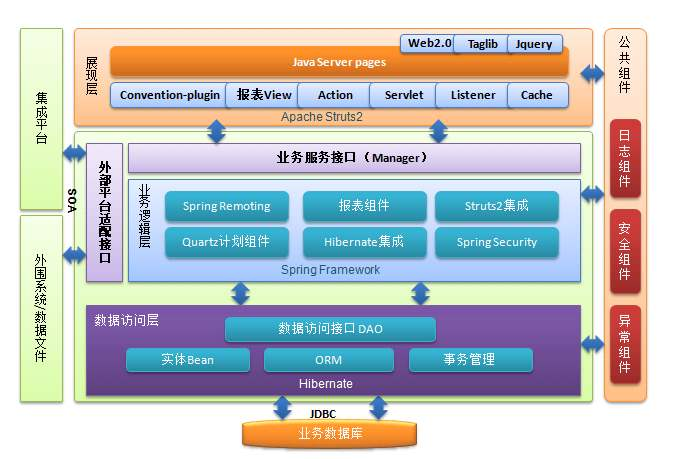
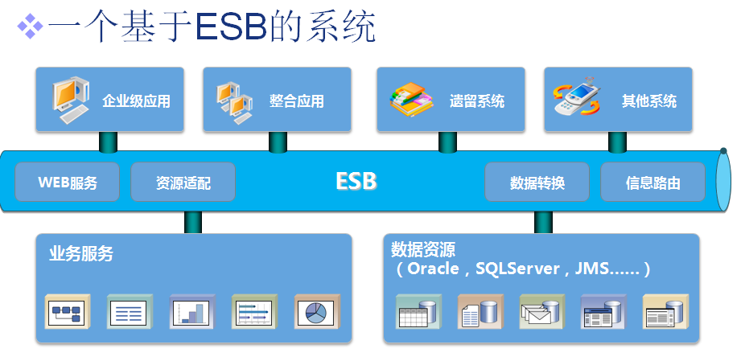
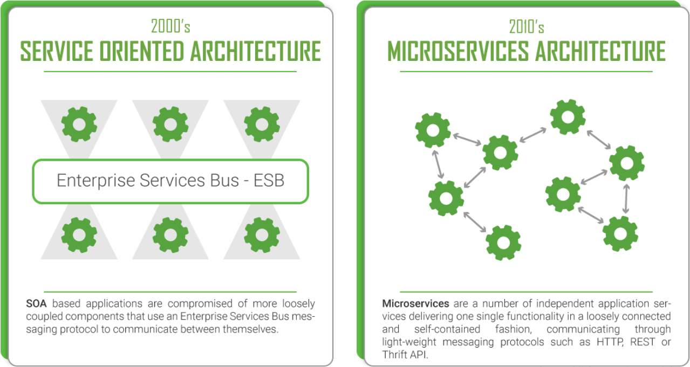

分布式基础（十八）——分布式理论之可扩展：服务化拆分
集中式应用的分布式改造必然伴随着拆分，拆分的方式有很多种，从最早的N层架构到SOA，再到现在流行的微服务。拆分的重要目的之一就是增强系统的可扩展性，本文将段对最常见的三种应用拆分方式进行介绍。
一、分层架构
应用为了实现“高内聚、低耦合”的设计目标，往往会进行拆分，一种最常见的拆分方式就是“分层”。“分层架构”也叫做“N层架构”，通常情况下，N至少是2层。基于划分维度的不同，“分层架构”又可以区分为：B/S和C/S架构、MVC和MVP架构、逻辑分层架构等。比较典型的是逻辑分层架构，如下图是J2EE应用的常见分层架构：

逻辑分层架构最核心的一点是需要保证各层之间的差异足够清晰，边界足够明显，其本质是隔离关注点（separation of concerns），即每一层的组件只处理本层的逻辑。通常来说，分层架构的主要关注点在于系统内部的拆分，而对于分布式的应用，我们更多关注的是系统间的拆分，与此对应的是两种主要的可扩展架构模式：SOA和微服务。
二、SOA
SOA的全称是Service Oriented Architecture——面向服务的架构，诞生于20世纪90年代。SOA在很多传统企业，特别是金融业、通信业落地和推广得比较成功，在互联网行业并没有大规模地实践和推广。这与传统企业的特点有关：
- 企业各部门有独立的IT系统，每个IT系统可能采购于不同的供应商，实现技术不同，采购方也不太可能完全对这些系统进行重构；
- 随着业务的发展，业务复杂越来越高，许多流程和业务需要多个IT系统共同配合完成。而原本这些相互独立的IT系统并没有统一的对外接口，每次开发新的流程和业务，都需要协调大量的IT系统，同时定制开发，效率很低。
为了应对上述问题，SOA提出了3个关键概念：服务、ESB、松耦合。
2.1 服务
SOA认为，所有业务功能都是一项服务，对外提供开放接口，当其他系统需要使用这项功能时，无须定制化开发，比如SOA服务化改造后的应用一般都会对外提供web service接口。
2.2 ESB
ESB的全称是 Enterprise Service Bus，即企业服务总线。ESB将企业中各个不同的服务连接在一起。因为各个独立的服务往往是异构的，如果没有统一的标准，则各个异构系统对外提供的接口是各式各样的。而ESB的作用就是屏蔽异构系统对外提供各种不同的接口方式，以此来达到服务间高效的互联调用。

2.3 松耦合
松耦合的目的是减少服务间的依赖和影响。因为采用SOA架构后，各个服务是独立部署运行的，甚至不清楚某个服务到底有多少对其他服务的依赖。如果做不到松耦合，某个服务一升级，依赖它的服务就可能全部故障。但实际上要真正做到松耦合并没有那么容易，是一项复杂的工作。
2.4 优缺点
SOA解决的是资源的重复利用问题，它的拆分粒度通常比较大。ESB需要实现各种系统间的协议转换、数据转换、透明的动态路由等功能，工作量和复杂度都很大，而且这种转换很消耗计算资源，当ESB承载的消息很多时，ESB本身会成为整个系统的性能瓶颈。
SOA是在各种异构系统存在多年的背景下产生的，其主要目的是去适配已经存在的各种异构系统。
三、微服务（Microservice）
微服务是近几年非常火的架构设计理念，Martin Fowler对微服务进行过系统性的阐述，将这一架构设计理念推向了高潮，其本质就是将原来单体应用内的各个模块拆分成独立的服务（子系统），如下图：

由于微服务中也包含了“服务”的概念，而SOA中也有“服务“的概念，我们自然而然就会想：微服务与SOA有什么关系？为了有了SOA还要提出微服务？
3.1 微服务与SOA的关系
服务粒度
整体上来说，SOA的服务粒度要更粗一些，而微服务的服务粒度更细一些。例如，对一个大型企业来说，“客户关系管理系统（CBMS）”就是SOA架构中的一个服务；而如果采用微服务架构，则CBMS会被拆分为更多的服务。
服务通信
SOA采用了ESB作为服务间通信的关键组件，负责服务定义、服务路由、消息转换、消息传递，总体上是重量级的实现。而微服务推荐统一的协议和格式，例如，RESTful协议、RPC协议。
服务交付
SOA对服务的交付没有特殊要求，因为SOA更多考虑的是兼容已有的系统；微服务提倡“快速交付“，相应地要求采取自动化测试、持续集成、自动化部署等敏捷开发相关的最佳实践。如果没有这些基础能力的支持，微服务规模一旦变大，部署运维成本呈成指数上升。
应用场景
SOA更加适合庞大、复杂、异构的企业级系统，这也是SOA诞生的背景。这类系统典型的特征是很多系统已经发展多年，采用不同的企业级开发技术，有的自研究，有的采购，很难完全推倒重来或进行大规模的优化和重构。因为成本和影响太大，只能采用兼容的方式进行处理，而承担兼容任务的就是ESB。
微服务更加适合于快速、轻量级的互联网应用，因为互联网企业大多没有历史包袱，能够接受快速尝试。Martin Fowler对微服务架构的特点作了比较精准的描述：
In short, the microservice architectural style is an approach to developing a single application as a suite of small services, each running in its own process and communicating with lightweight mechanisms, often an HTTP resource API. These services are built around business capabilities and independently deployable by fully automated deployment machinery. There is a bare minimum of centralized management of these services, which may be written in different programming languages and use different data storage technologies.

3.2 微服务的陷阱
单纯从上面的对比来看，似乎微服务大大优于SOA，这也导致了很多团队不假思索地就开始使用微服务架构。我们来看下微服务具体有哪些坑：
服务划分过细，服务间关系复杂
服务划分过细，单个服务的复杂度确实下降了，但整个系统的复杂度却上升了，因为微服务将系统内的复杂度转移为系统间的复杂度了。从理论的角度来计算，n个服务的复杂度是n*(n-1)/2，整体系统的复杂度是随着微服务数量的增加呈指数级增加的。
服务数量太多，团队效率急剧下降
- 开发工程师要设计多个接口，打开多个工程，调试时要部署多个程序，提测时要打多个包；
- 测试工程师要部署多个环境，准备多个微服务的数据，测试多个接口；
- 运维工程师每次上线都要操作多个微服务，并且微服务之间可能还有依赖关系。
调用链太长，性能下降
由于微服务之间通过HTTP或RPC调用，每次调用必须经过网络，假设一个接口正常平均相应时间50ms，经过6次调用性能消耗将达到300ms。
调用链太长，问题定位困难
系统拆分为微服务后，一次用户请求需要多个微服务协同处理，任意服务的故障都可能导致整个业务的失败。由于微服务数量众多，且故障存在扩散现象，快速定位到底是哪个服务故障是一件困难的事情。
没有自动化支撑，无法快速交付
如果没有相应的自动化系统进行支撑，都靠人工去操作，那么微服务不但达不到快速交付的目的甚至还不如一个大而全的系统效率高，没有自动化支撑将出现以下问题：
- 没有自动化测试支撑，每次测试都需要测试大量接口
- 没有自动化部署支撑，每次部署6-7个服务，几十台机器，只能通过shell人肉运维
- 没有自动化监控支撑，每次故障定位需要人工查几十台服务器甚至几百个微服务的各种日志文件
没有服务治理，难以统一管理大量微服务
随着微服务种类和数量越来越多，如果没有服务治理系统进行支撑，将会产生以下问题：
- 服务路由：假设某个微服务有60个节点，分散在20台机器上，那么其它依赖该服务的微服务如何知道其部署情况？
- 服务故障隔离：假设上述例子中的60个节点有5个节点发生了故障，依赖的微服务如何处理这种情况？
- 服务注册和发现：假设某个微服务从60个节点扩容到80个节点，或缩减到40个节点，新增或减少的节点如何让依赖的服务知道？
如果以上这些场景都依赖人工去解决，那么微服务架构反而会成为分布式系统的瓶颈，所以微服务架构要落地，最终的解决方案必须依赖自动化的服务管理系统。
四、总结
分布式系统要求具备可扩展性，通常的实现方式就是进行应用的拆分，而拆分往往伴随服务化改造。SOA和微服务是两种主流的可扩展架构模式。SOA是在各种异构系统存在多年的背景下产生的，其主要目的是去适配已经存在的各种异构系统。微服务本质是SOA思想的延伸或变形，微服务架构的落地依赖于各类自动化基础设施的构建，当完成整个微服务的基础设施后，你会发现其复杂度与ESB所差无几。
附微服务架构所依赖的基础设施，后续进阶篇中，我们会以Spring Cloud为例对一些核心组件做讲解：
- 自动化测试/部署
- 配置中心
- API网关
- 服务注册
- 服务发现
- 服务路由
- 服务容错
- 服务监控
- 服务跟踪
- 服务安全